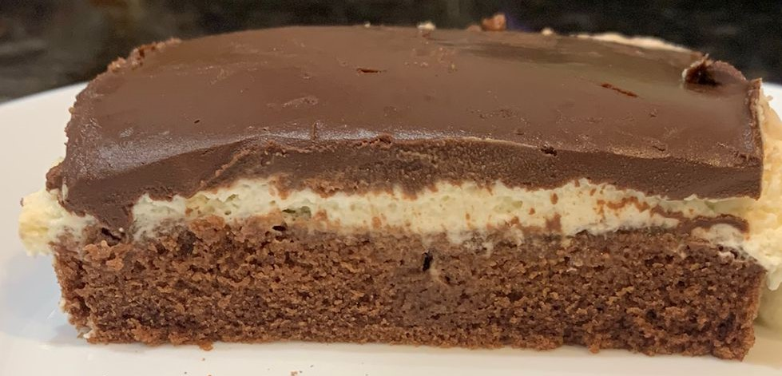

Recette gateau qui pleure
Ce gâteau est composé d'une Génoise moelleuse imbibée de lait, d'une crème chantilly et d'une ganache au chocolat.
| Temps de préparation: 45 min | Cuisson: 25 min | Prise au froid | Quantité: 12 personnes |
Liste des ingrédients pour la génoise:
Préparation de la génoise:
- Préchauffer le four à 180°C.
- Fouetter ensemble les œufs et les sucres, à vitesse rapide, pendant environ 5 minutes. La préparation doit doubler de volume.
- Ajouter le sel, l'huile, le lait et fouetter de nouveau.
- Tamiser la farine, le cacao et la levure au-dessus de la préparation. Mélanger de nouveau jusqu'à obtenir une préparation homogène.
- Verser dans un moule (20*30 cm). Enfourner 25 minutes.
Liste des ingrédients pour l'imbibage:
Préparation de l'imbibage:
- Faire chauffer le lait et le cacao jusqu'à ce que la cacao soit dilué.
- Piquer le gâteau encore chaud avec une fourchette.
- Verser le lait sur le gâteau, en plusieurs fois. Laisser le gâteau, en plusieurs fois. Laisser le gâteau absorber le lait au réfrigérateur (le temps de faire la suite).
Liste des ingrédients pour la crème chantilly:
Préparation de la chantilly:
- Fouetter la crème liquide sur une vitesse lente, jusqu'à ce qu'elle épaississe.
- Ajouter le sucre et fouetter de nouveau quelques secondes.
- Quand le gâteau a bien refroidi, verser la crème chantilly dessus et lisser avec une spatule.
Liste des ingrédients pour la ganache:
Préparation de la ganache:
- Couper le chocolat en petits morceaux.
- Faire chauffer la crème liquide et la verser sur le chocolat.
- Attendre un peu que la ganache refroidisse, mais pas trop!
- Placer au réfrigérateur au minimum pendant 4 heures.
